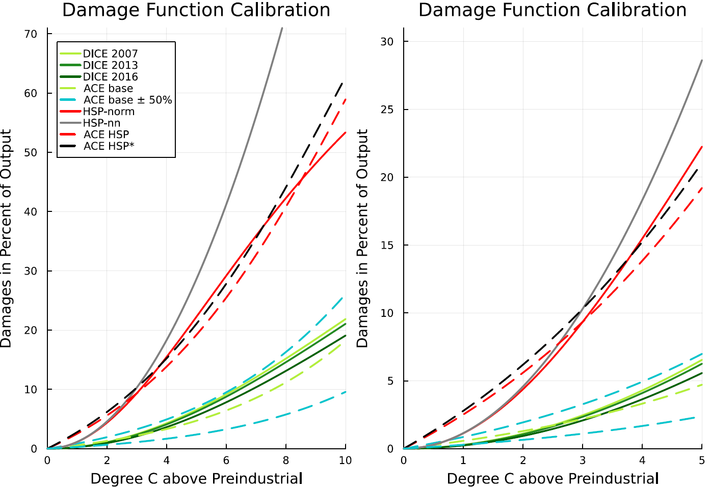

ACE_Traeger_Replication.jl
Authors: Norbert Monti, Justine Nayral
This package reproduces the findings of Traeger, Christian P. (2023) in his paper titled 'ACE—Analytic Climate Economy,' published in the American Economic Journal: Economic Policy, Volume 15, Issue 3, pages 372-406. While the original replication materials provided by the author were coded in Matlab, we have used Julia to build a replication package, reproducing the main results, Figure II, Figure III, Figure IV, and Table I.
The paper examines optimal carbon taxation using integrated assessment models (IAMs) of climate change. These models are designed to evaluate the long-term interactions among economic production, greenhouse gas emissions, and global warming. C. Traeger discusses the implications of temperature and carbon tax impact. The persistence of carbon increases the optimal tax twofold to thirtyfold, depending on the calibration. On the contrary, the delay in temperature dynamics (Ocean cooling) decreases the carbon tax from 65 to 25%. The Analytic Climate Economy (ACE) model is close to Nordhaus' DICE model. It incorporates most elements of IAMs. Labor, capital, technology and energy produced output are either consumed or invested. The author distinguish "Dirty" energy sectors, consuming fossil fuels and generating greenhouse gas emissions. These gases accumulate in the atmorsphere causing radiative forcing and increase global temperature, which reduces output. This economic model aims at helping economists to develop more accurate opinions about the social cost of carbon.
Package installation guide
You can either choose to download the package directly in the terminal or in the julia environment
In the terminal
In order to add ACE_Traeger_Replication.jl take the following steps:
1). Install git. Here's a handy guide, depending on your OS.
2). In terminal, go to the folder where you want to save the package locally. Clone the package to your computer:
cd "path/where/you/want/to/save/package"
git clone https://github.com/justinenayral/ACE_Traeger_replication.jl.git3). Start up a julia session and go to the source folder where ACE_Traeger_replication.jl is saved
cd("path/where/code/is/saved/ACE_Traeger_replication.jl")4). Run the module
include("ACE_Traeger_replication.jl")In Julia environment
1). Install the ACE_Traeger_replication.jl package in the package environment of your julia repl (simply use ] to access it)
add https://github.com/justinenayral/ACE_Traeger_replication.jl2). Run the package (outside the package environment)
using ACE_Traeger_replication3). Go to your working directory:
cd("where/is/your/working/directory")Help
In case of issues, while running the code just use the ? in the repl, followed by the function's name, to get the help documentation. For more information on the underlying code, click on the source button in the relevant section.
Data availability
Our replication packages require downloading the data used by the authors from the original replication package.
Path
The user needs to provide a path where figures will be saved:
path = "C:/Users/..."Figures generated are saved in path. Otherwise figures will be saved in the current directory.
Datapath
To output some certain figures, the data provided in the original replication package is needed. The specific packages necessary are given below. The user needs to save the data in datapath:
datapath = "C:/Users/..."Otherwise function will look for data in the current directory by default.
Packages
Before using the package, it is required to install:
using Pkg
Pkg.add("MAT")
Pkg.add("Printf")
Pkg.add("LinearAlgebra")
Pkg.add("DataFrames")
Pkg.add("CSV")
Pkg.add("XLSX")
Pkg.add("NLsolve")
Pkg.add("Plots")Damage functions
The authors used differents definition for calculating environmental damages. This section presents the diferent functions the user can use to calculate them, depending of the method prefer.
ACE
Main.ACE_Traeger_replication.dam_ACE — FunctionThe damage function in ACE takes an exponential functional form:
- $D(T)=1-exp(-ξ0*exp(ξ1*T)+ξ0)$
with $ξ0$, a free damage parameters and the paramteter $ξ1=log(2)/s$ pinned down by climate sensitivity s.
Input:
- $ξ0$: xi0 (Calibrated to 0.022 in the paper. The base calibration is an exact match of the two calibration points 0° and 2.5° in the 2007 model)
- $ξ1$: xi1 (Estimated to $0.25$ in the paper)
- $T$: temperature
Syntax:
ACE_Traeger_replication.dam_ACE(xi0, xi1, T)Output:
- The calculated ACE damage estimate.
Example:
julia> ACE_Traeger_replication.dam_ACE(0.022, 0.25, 3)
0.024274517795511485DICE
Main.ACE_Traeger_replication.dam_DICE — FunctionDICE damage function replace the quadratic damage term $aT^2$, to limit damages to 100 percent of production. $D(T)=1-(1/(1+aT^2))$
Input:
- $a$ : Damage coefficients ($a=0.0028$ for 2007, $a=0.00267$ for 2013, $a=0.00236$ for 2016)
- $T$: temperature
Syntax:
ACE_Traeger_replication.dam_DICE(a, T)Output:
- The calculated DICE damage estimate.
Example
julia> ACE_Traeger_replication.dam_DICE(0.0028,3)
0.02458056964494726Howard and Sterner (2017)
Main.ACE_Traeger_replication.dam_Sterner — FunctionThis damage function is based on Howard and Sterner (2017): $D(T)=aT^2$
Input:
- $a$ : Damage coefficient. By default, it is set to 0.01145. The user must write the value of a explicitely, if he wants to use the dam_Sterner function with another $a$.
- $T$: temperature
Syntax:
ACE_Traeger_replication.dam_Sterner(T, a)Output:
- The calculated DICE-Howard-Sterner damage estimate.
Example
julia> ACE_Traeger_replication.dam_Sterner(3)
0.10305Figure II (Damage Function Plot)
Main.ACE_Traeger_replication.Damage_function_plot — FunctionThe function below replicates original figure II in the paper. This figure shows the predicted damages of different models depending on the temperature degrees above the preindustrial level.
The different models are:
- DICE 2007, 2013, 2016
- ACE base damage calibration. It matches the two calibration points 0 and 2.5° in the 2007 model.
- HSP-norm: Howard and Sterner's damage function using DICE's approach to limit damages to 100 percents
- HSP-nn: Howard and Sterner's damage function using DICE's approach, not normalized to limit damages to 100 percents. Damages exceed production at 9.5°.
The left side of the plot refers to the temperature range of the IPCC secenarios in Figure 3 and the right side is focuses on lower degrees of warming.
Input:
- path: The user should provide their preferred path to save the figure. Otherwise the function takes the working directory by default.
Syntax:
ACE_Traeger_replication.Damage_function_plot(path)Output:
- Figure 2 saved into path
Original figure: 
The figure generated by our package: 
Figure III (Temperature Dynamics Simulation)
Main.ACE_Traeger_replication.TempFitSim — FunctionThis function replicates Figure III of the paper. The authors use the MAGICC6.0 model by Meinshausen, Raper and Wigley(2011) to simulate the Representative Concentration Pathway (RCP) scenario over a time horizon of 400 years. The calibration of ACE uses 2 ocean layers(upper and deep) compared to MAGGIC's 50 layers and DICE's ocean layers. The figure shows ACE's temperature response from present times to 2400 compared to MAGICC6.0 using the color-coded radiative forcing scenarios of the latest IPCC assessment report.
Note that the dataframe MagiccOcean.mat and TempDataCalel.mat are required to run this function. Please save these dataframes to your datapath of choice (default is current working directory).
Make sure you have the following dataframes:
- MagiccOcean.mat
- TempDataCalel.mat
Input:
- path: The user should provide their preferred path to save the figure. Otherwise the function takes the working directory by default.
- datapath: The user should provide the location of the data needed for the figure (found in replication package). Otherwise the function takes the current working directory as default.
Necessary dataframes are:
- MagiccOcean.mat
- TempDataCalel.mat
Syntax:
ACE_Traeger_replication.TempFitSim(path, datapath)Output:
- Figure 3 saved into path
Original figure: 
The figure generated by our package:
Impulse Response Function
Main.ACE_Traeger_replication.Impulse_response — FunctionThe function below replicates a part of figure 4 in the paper. This figure shows temperature increases (in degree celsius) resulting from a one-time release of certain amount of gigatons of carbon across different models. Users can specify the amount of carbon released into the atmosphere. The default is 100 GtC as in the paper.
The different models are:
- ACE-DICE ACE using DICE's carbon cycle
- ACE-Joos ACE using Joos et al. (2013) impulse-response model
- Dynamic Integrated Climate-Economy (DICE) 2013, 2016
Input:
- impulse: The user can provide an impulse of their choice (in gigatons of carbon-equivalent)
- path: The user should provide their preferred path to save the figure. Otherwise the function takes the working directory by default.
Syntax:
ACE_Traeger_replication.Impulse_response(pulse, path)Output:
- figure saved into path
The figure generated by our package (using default options):
Figure IV (Impulse response function combined)
Main.ACE_Traeger_replication.Impulse_response_combined — FunctionThe function below replicates figure 4 in the paper. This figure shows temperature increases (in degree celsius) resulting from a one-time release of 100 of gigatons of carbon (GtC) across different models.
The different models are:
- ACE-DICE ACE using DICE's carbon cycle
- ACE-Joos ACE using Joos et al. (2013) impulse-response model
- Dynamic Integrated Climate-Economy (DICE) 2013, 2016
- Climate Framework for Uncertainty, Negotiation and Distribution (FUND)
- Policy Analysis of the Greenhouse Effect (PAGE)
- Coupled Model Intercomparison Project Phase 5 (CMIP5) 3.0 and 3.25 (DPRV)
- Bern present day (PD)
- Bern pre-industrial (PI)
- Transient climate response to cumulative carbon emissions model (TCRE)
Make sure you have the following dataframes:
- impulsetimestep5logi001.mat
- impulsetimestep1logi001.mat
- VenmansCS3lam_1p06.mat
- ImpulseResponseBern2p5_Joos.mat
- ImpulseResponseBern2p5PDJoos.mat
- Venmans_CS3p1.mat
Input:
- path: The user should provide their preferred path to save the figure. Otherwise the function takes the current working directory by default.
- datapath: The user should provide the location of the data needed for the figure (found in replication package). Otherwise the function takes the current working directory as default.
Necessary dataframes are:
- impulsetimestep5logi001.mat
- impulsetimestep1logi001.mat
- VenmansCS3lam_1p06.mat
- ImpulseResponseBern2p5_Joos.mat
- ImpulseResponseBern2p5PDJoos.mat
- Venmans_CS3p1.mat
Syntax:
ACE_Traeger_replication.Impulse_response_combined(path, datapath)Output:
- Figure 4 saved into path
Original figure:
The figure generated by our package:
Table I (Social Cost of Carbon estimates)
Main.ACE_Traeger_replication.SCC — FunctionThis function replicates Table I of the paper. The table shows the social cost of carbon (SCC) estimates based on a variety of assumptions. It also provides information on the cent per gallon and euro per liter cost of gasoline. These assumptions are included in the scenarios and can take the following values:
- various annual discount factors (rho).
- damages can be calibrated to the DICE model (1) or damages are calibrated to Howard-Sterner (2017) and Pyndick (2020) models (2)
- the scenario can be based on the use of the carbon cycle matrix given by DICE or the carbon cycle matrix given by Joos et al. (2013)
- the scenario can include population weighting or not
- the scenario can include a capital share in production (kappa) of value 0.3 (stylized fact) or 0.4 (more recent estimates) as well as calibrated ones.
Note that population recalibration is not implemented in this replication, therefore 3 scenarios are missing (original scenarios 7, 12 and 15).
Input:
- path: The user should provide their preferred path to save the figure. Otherwise the function takes the working directory by default.
Syntax:
ACE_Traeger_replication.SCC(path)Output:
- Table 1 saved into path
Original table:
The table generated by our package: